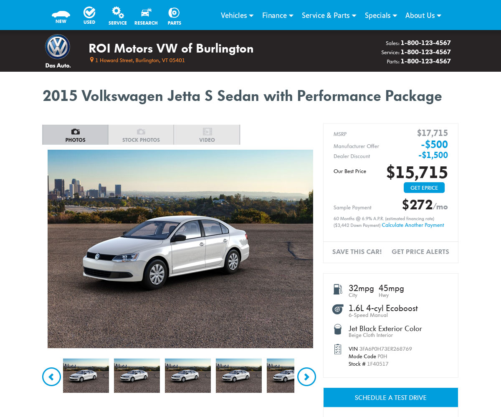
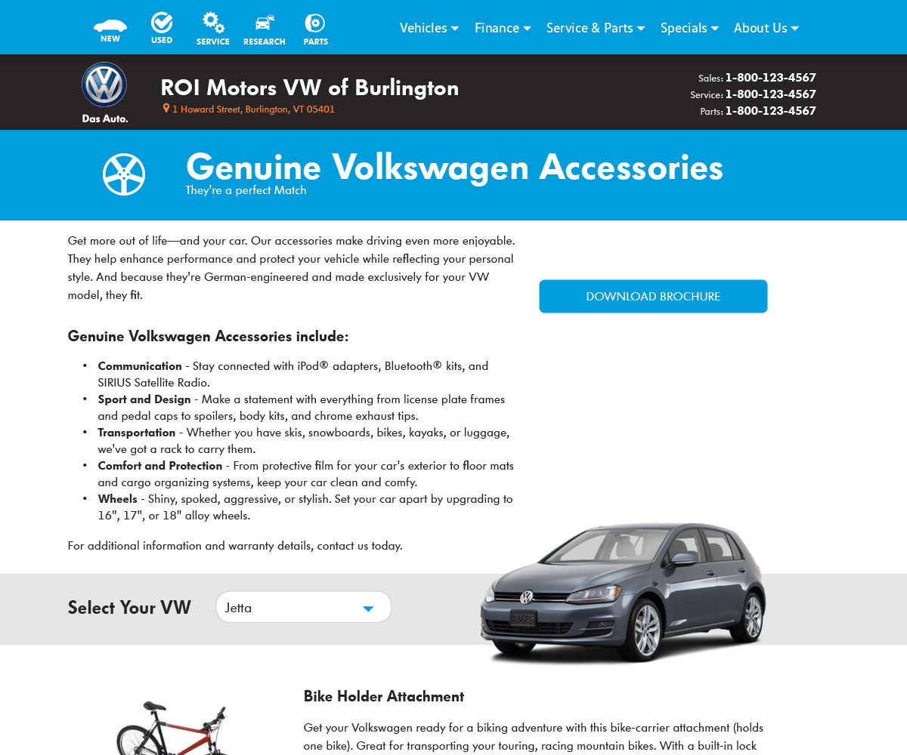
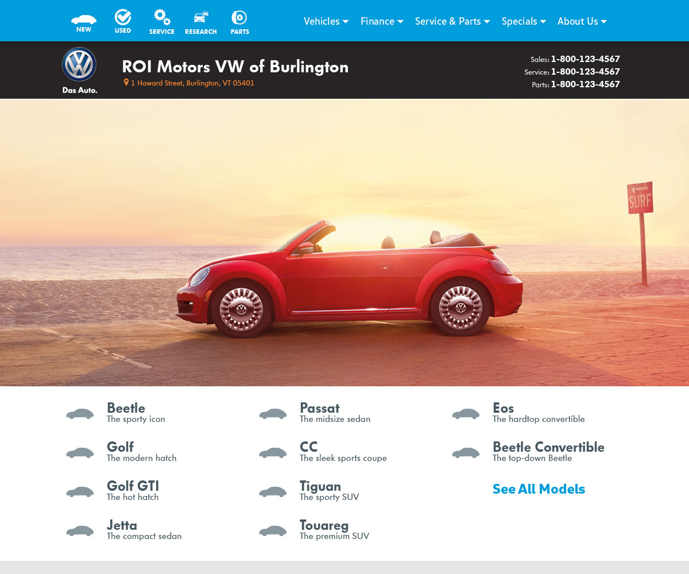
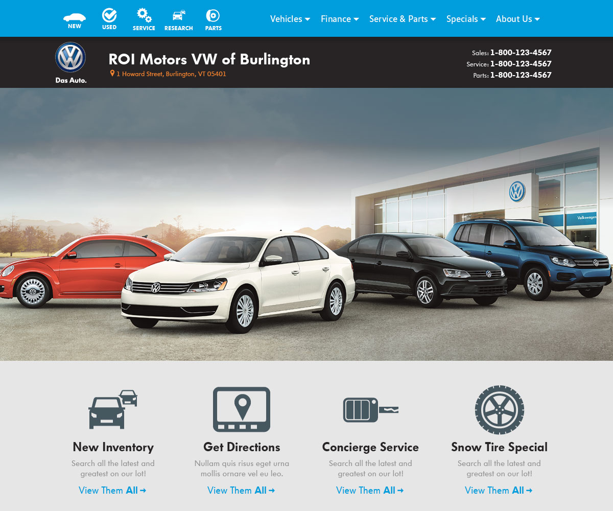
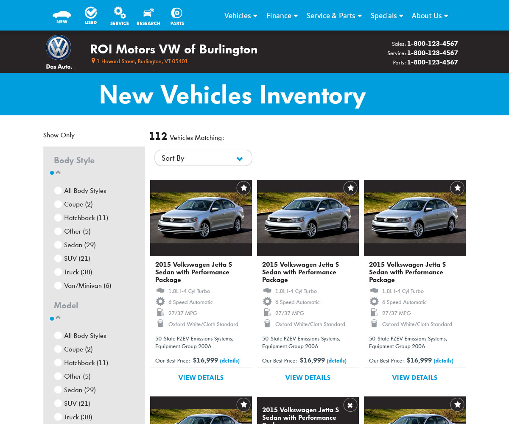
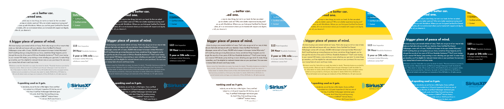
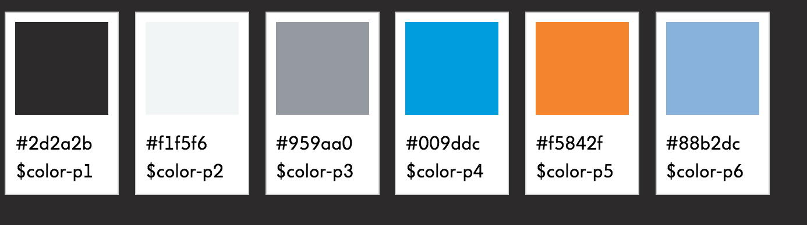

<body class="volkswagen"></body><link href="https://cdnjs.cloudflare.com/ajax/libs/meyer-reset/2.0/reset.min.css" rel="stylesheet" type="text/css"/><link href="styles.css" rel="stylesheet" type="text/css"/><div class="main-content"><meta name="viewport" content="width=device-width, initial-scale=1"/><link href="https://fonts.googleapis.com/css?family=EB+Garamond:400,500,500i,700&amp;display=swap" rel="stylesheet"/><script src="https://cdnjs.cloudflare.com/ajax/libs/jquery/3.3.1/jquery.min.js"></script><script src="js/works.js"></script><header><h3> <a href="index.html">Nathan A. Dana</a></h3><ul class="bigmenu"><li><h5><a href="index.html">Case <span class="t-none">Studies</span><span class="m-none">Study Index</span></a></h5></li><li><h5><a href="works.html">Works</a></h5></li><li><h5><a href="resume.html">Resume</a></h5></li></ul></header><article><div class="vw-lead-image" style="background-image: url('img/vw-desktop-large.png');"></div><h1 class="lead">Volkswagen Dealers</h1><p class="lead">Volkswagen came to Dealer.com to provide compliant sites for their dealerships. For me, this meant following their style guides but expanding to add variety, so that dealers would be able to differentiate from their neighboring competition. A series of index pages and color variations were designed and developed.</p><div class="image-slideshow"><br/><br/><br/><br/><br/></div><h2>Lessons Learned</h2><p>This was the first build where I was fully involved from the beginning (raw design) to end (development and configuration). This allowed me to delve deeply into the code and improve the final product, whereas before I would mockup an ideal situatuion and hope it could be executed. It allowed me to better understand the constraints of the system and know where it could be pushed and make decisions appropriately.</p><h3>Flipping Colors</h3><p>Dealerships like to be unique, and an important component of this is the color scheme of their site. Historically, developing additional color variations was a long and involved process, but through the implementation of color variables in SASS, and smart naming and use of colors, it became easy to add great variety to the templates.</p><br/><br/><h3>A consistent flow</h3><p>Volkswagen had recently redesigned vw.com and I wanted to make sure that would translate down to the local dealership for consistent user experience. This meant challenging the development platform which had not deviated from the traditional drop-down navigation. I was able to integrate a mix of direct links to critical paths with a menu system that worked cleanly within our system and mimicked the vw.com experience as well.<video src="img/vw-menusm.mov" autoplay="autoplay" loop="loop"></video><br/></p></article></div>